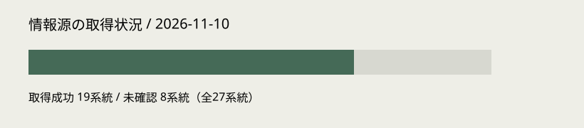

HW3 + HW4 · AUTOMATED SOURCE MONITOR
2026.11.10｜Tesla FSD・世界の自動運転とオーナーニュース
FSD・世界の自動運転・購入・充電などの27系統中、19系統を取得。取得できなかった情報も明示します。

Darin Caggiano / Wikimedia Commons · CC BY-SA 4.0 · 縮小版。表示枠に合わせたトリミングあり。
これは取得結果の日本語レポートです。海外見出しは未検証の報道案内。国内の解禁・在庫・開業を自動認定する記事ではありません。
今回検出した更新
Spigen公式 Teslaアクセサリー：出典内容の変更候補
ページの共通部分やPDF差し替えも含むため、制度・価格・機能の変更内容は未判定。最新の原文確認が必要です。
公式発表・海外報道への入口
初回取得時の見出しは既存の参考記事です。見出しの掲載順と公開日は原文で確認してください。過去記事の再配信もあり得ます。
- 世界の自動運転／未検証 · 初回参考Teslaの「カメラ単体」を否定する理由 Waymoが明かした自動運転の壁と自社製プロセッサー (1/4) - ASCII.jp世界の自動運転報道の発見用RSS / 原文公開日 Mon, 09 Nov 2026 03:00:00 GMT
- 世界の自動運転／未検証 · 初回参考Wayve、Blackwell GPUを搭載したCoreWeave CloudでAI Driverモデルを学習 - Unite.AI世界の自動運転報道の発見用RSS / 原文公開日 Mon, 09 Nov 2026 13:42:03 GMT
- 世界の自動運転／未検証 · 初回参考Avenira Ltd【AEV】株価・チャート - Moomoo世界の自動運転報道の発見用RSS / 原文公開日 Mon, 09 Nov 2026 01:14:27 GMT
- 世界の自動運転／未検証 · 初回参考COREWEAVE TO POWER WAYVE'S AI DRIVER TRAINING IN MULTI-YEAR AGREEMENT - Moomoo世界の自動運転報道の発見用RSS / 原文公開日 Mon, 09 Nov 2026 13:11:10 GMT
- 海外報道・未検証 · 新規検出Rivian Point to Point vs Tesla FSD: Why It Matters - RivianTrackr世界FSD報道の発見用RSS / 原文公開日 Mon, 09 Nov 2026 13:45:42 GMT
- 海外報道・未検証 · 新規検出After Fort Worth, Tesla launches Robotaxi Service in San Antonio, Texas today (Nov 9) — now availab…世界FSD報道の発見用RSS / 原文公開日 Mon, 09 Nov 2026 10:34:50 GMT
- 海外報道・未検証 · 新規検出Turo Launches Full Self-Driving Tesla Rentals for US Users - Auto World News世界FSD報道の発見用RSS / 原文公開日 Sun, 08 Nov 2026 21:46:00 GMT
- 海外報道・未検証 · 新規検出Tesla Stock Forecast: How Much Will TSLA Stock Be Worth in 2030? Can It Hit $3,000? - TradingKey世界FSD報道の発見用RSS / 原文公開日 Sun, 08 Nov 2026 20:26:37 GMT
- 補助金・期限 · 新規検出令和５年度補正予算および令和６年度予算 充電設備補助金 充電インフラ整備事業補助金交付実績一覧を公表しましたCEV補助金：実施機関のお知らせ / 原文公開日 原文で確認
- 購入・補助金／未検証 · 新規検出【コラム】300万円台のクルマ選びは本当に難しい、けれどそれがたまらなく楽しい - www.caranddriver.co.jp日本のTesla購入・補助金の報道発見 / 原文公開日 Mon, 09 Nov 2026 07:49:56 GMT
- 購入・補助金／未検証 · 新規検出テスラ、「サイバートラック」の予約購入者に対し予約金を返金する方針＝米国株個別 - 株探日本のTesla購入・補助金の報道発見 / 原文公開日 Mon, 09 Nov 2026 14:44:00 GMT
- 購入・補助金／未検証 · 新規検出米テスラ、ＥＶトラック生産縮小 来年半ばに:経済 - 福島民友新聞社日本のTesla購入・補助金の報道発見 / 原文公開日 Fri, 06 Nov 2026 23:54:00 GMT
- 購入・補助金／未検証 · 新規検出マスク氏の4.46億ドル中間選挙賭けが裏目に、テスラとスペースXが時価総額1,200億ドル消失 - BigGo ファイナンス日本のTesla購入・補助金の報道発見 / 原文公開日 Thu, 05 Nov 2026 14:25:00 GMT
- アクセサリー／未検証 · 新規検出車のマッドガード スプラッシュガード プルーフ マッドフラップ テスラ用モデル 3 2016-2021 カーアクセサリー前輪と後輪ア フェンダパネル - proto.lifeTesla用アクセサリー新着の発見 / 原文公開日 Sun, 08 Nov 2026 05:27:40 GMT
- アクセサリー／未検証 · 新規検出テスラの16インチ大画面も、一人で貼れる。Deffがテスラ専用タッチスクリーン保護フィルムを11月4日発売 - ニコニコニュースTesla用アクセサリー新着の発見 / 原文公開日 Wed, 04 Nov 2026 12:51:15 GMT
- 世界の自動運転／未検証 · 新規検出日本国土開発 (1887)に関するニュース - Moomoo世界の自動運転報道の発見用RSS / 原文公開日 Mon, 09 Nov 2026 00:48:41 GMT
- 海外報道・未検証 · 新規検出Tesla Model 3 Highland approved to receive adaptive headlights in Europe - Teslarati世界FSD報道の発見用RSS / 原文公開日 Mon, 09 Nov 2026 07:22:18 GMT
- 世界の自動運転／未検証 · 新規検出Uberが「Uber Parking」を正式提供開始、配車だけでなく自ら運転する際の駐車場予約も可能に - Mashdigi世界の自動運転報道の発見用RSS / 原文公開日 Tue, 10 Nov 2026 01:00:19 GMT
- 世界の自動運転／未検証 · 新規検出【解説】newmo208億円調達の勝算｜日本型自動運転と2層AI - PlusWeb3世界の自動運転報道の発見用RSS / 原文公開日 Mon, 09 Nov 2026 12:00:00 GMT
- 世界の自動運転／未検証 · 新規検出日産プロパイロットの自動運転機能は？ロボタクシーの開発計画は？ - 自動運転ラボ世界の自動運転報道の発見用RSS / 原文公開日 Mon, 09 Nov 2026 05:00:28 GMT
- 世界の自動運転／未検証 · 新規検出テスラ、日本で「ロボタクシー」の商標出願 - 自動運転ラボ世界の自動運転報道の発見用RSS / 原文公開日 Mon, 09 Nov 2026 06:17:36 GMT
- 海外報道・未検証 · 新規検出Tesla 2026.38.4.5 Is Out: FSD v14.2 Lite and What to Do - BASENOR - Tesla Accessories世界FSD報道の発見用RSS / 原文公開日 Tue, 10 Nov 2026 04:06:16 GMT
- 海外報道・未検証 · 新規検出Mercedes' Answer To Tesla FSD Requires Hands On The Wheel. Does That Make It Better Or Worse? - Ins…世界FSD報道の発見用RSS / 原文公開日 Mon, 09 Nov 2026 15:08:00 GMT
- 海外報道・未検証 · 新規検出Jay Leno Tries Tesla FSD for First Time in Model Y L [Video] - Drive Tesla Canada世界FSD報道の発見用RSS / 原文公開日 Mon, 09 Nov 2026 23:21:31 GMT
- 海外報道・未検証 · 新規検出FSD Beta Safety Score Resets: What Owners Need to Know - BASENOR - Tesla Accessories世界FSD報道の発見用RSS / 原文公開日 Tue, 10 Nov 2026 00:03:18 GMT
- 補助金・期限 · 新規検出＜再掲、追記＞令和７年度補正 CEV 補助金（車両） テスラ モデル３、モデルＹのグレード名称の一部変更について （車両コード 1168、1316、1327）CEV補助金：実施機関のお知らせ / 原文公開日 原文で確認
- 購入・補助金／未検証 · 新規検出テスラ、「サイバートラック」の予約購入者に対し予約金を返金する方針＝米国株個別 - 株探日本のTesla購入・補助金の報道発見 / 原文公開日 Mon, 09 Nov 2026 14:44:00 GMT
- 購入・補助金／未検証 · 新規検出【ECOライフホーム】テスラ新世代家庭用蓄電池 Powerwall 3 - ニコニコニュース日本のTesla購入・補助金の報道発見 / 原文公開日 Tue, 10 Nov 2026 02:51:20 GMT
- アップデート／未検証 · 新規検出AppleがiOS 27.2.1を公開、不具合とセキュリティの修正 - Pasquale PillitteriTeslaアップデートの報道発見 / 原文公開日 Mon, 09 Nov 2026 20:30:36 GMT
日本のオーナーへの確認ポイント
HW3・HW4とも、海外の提供開始・価格・バージョンを国内条件へ直接適用しないでください。在庫は公式商品画面、新しい充電拠点は公式詳細と車内地図を確認します。国内の開始時期を推定できる新たな根拠は、この定型レポートでは認定していません。
購入前・オーナー向け：今日の確認ポイント
購入特典は対象車・期限・残枠、補助金は登録日別の額・申請期限・予算終了見込みを分けて確認。FSDはHWと契約、アップデートは日本向け配信条件を確認します。アクセサリーは車両世代・実寸・国内販売条件を照合します。
本日のモデル別・年式別中古相場
元データ：カーセンサーの公開相場表。価格帯ごとの分布から中央値の所属範囲を求めたものです。グレード・距離・修復歴の構成をそろえた指数ではありません。
カーセンサー Model 3 掲載価格相場
取得 2026-11-10T13:32:12+09:00 / 掲載 186台。出典：掲載価格分布 ↗
| 登録年の区分 | 掲載台数 | 中央値が属する範囲（本体価格） | 注意 |
|---|---|---|---|
| 2019年 | 13台 | 205万円以上〜225万円未満 | 掲載価格・成約価格ではない |
| 2020年 | 18台 | 185万円以上〜225万円未満 | 掲載価格・成約価格ではない |
| 2021年 | 70台 | 225万円以上〜245万円未満 | 掲載価格・成約価格ではない |
| 2022年 | 60台 | 265万円以上〜285万円未満 | 掲載価格・成約価格ではない |
| 2023年 | 7台 | 385万円以上〜405万円未満 | 少数標本（10台未満） |
| 2024年 | 12台 | 365万円以上〜405万円未満 | 掲載価格・成約価格ではない |
| 2025年 | 5台 | 425万円以上〜445万円未満 | 少数標本（10台未満） |
国内導入前の年式区分 1台を表から除外。入力誤りや並行輸入を自動判定していません。
カーセンサー Model Y 掲載価格相場
取得 2026-11-10T13:32:12+09:00 / 掲載 145台。出典：掲載価格分布 ↗
| 登録年の区分 | 掲載台数 | 中央値が属する範囲（本体価格） | 注意 |
|---|---|---|---|
| 2022年 | 49台 | 275万円以上〜295万円未満 | 掲載価格・成約価格ではない |
| 2023年 | 49台 | 295万円以上〜315万円未満 | 掲載価格・成約価格ではない |
| 2024年 | 13台 | 375万円以上〜395万円未満 | 掲載価格・成約価格ではない |
| 2025年 | 28台 | 495万円以上〜515万円未満 | 掲載価格・成約価格ではない |
| 2026年以降 | 6台 | 515万円以上〜555万円未満 | 少数標本（10台未満） |
カーセンサー Model S 掲載価格相場
取得 2026-11-10T13:32:12+09:00 / 掲載 25台。出典：掲載価格分布 ↗
| 登録年の区分 | 掲載台数 | 中央値が属する範囲（本体価格） | 注意 |
|---|---|---|---|
| 2014年 | 2台 | 0万円以上〜180万円未満 | 少数標本（10台未満） |
| 2015年 | 2台 | 300万円以上〜460万円未満 | 少数標本（10台未満） |
| 2016年 | 3台 | 220万円以上〜240万円未満 | 少数標本（10台未満） |
| 2017年 | 1台 | 200万円以上〜220万円未満 | 少数標本（10台未満） |
| 2018年 | 6台 | 320万円以上〜380万円未満 | 少数標本（10台未満） |
| 2019年 | 1台 | 240万円以上〜260万円未満 | 少数標本（10台未満） |
| 2020年 | 5台 | 420万円以上〜440万円未満 | 少数標本（10台未満） |
| 2021年 | 1台 | 560万円以上〜580万円未満 | 少数標本（10台未満） |
| 2023年 | 4台 | 880万円以上 | 少数標本（10台未満） |
カーセンサー Model X 掲載価格相場
取得 2026-11-10T13:32:12+09:00 / 掲載 44台。出典：掲載価格分布 ↗
| 登録年の区分 | 掲載台数 | 中央値が属する範囲（本体価格） | 注意 |
|---|---|---|---|
| 2016年 | 1台 | 0万円以上〜285万円未満 | 少数標本（10台未満） |
| 2017年 | 15台 | 385万円以上〜405万円未満 | 掲載価格・成約価格ではない |
| 2018年 | 8台 | 465万円以上〜485万円未満 | 少数標本（10台未満） |
| 2019年 | 4台 | 405万円以上〜545万円未満 | 少数標本（10台未満） |
| 2020年 | 11台 | 525万円以上〜545万円未満 | 掲載価格・成約価格ではない |
| 2021年 | 1台 | 685万円以上〜705万円未満 | 少数標本（10台未満） |
| 2023年 | 4台 | 1025万円以上〜1105万円未満 | 少数標本（10台未満） |
この日の取得状況

| 情報源 | 状態 | 確認時刻 |
|---|---|---|
| 世界の自動運転報道の発見用RSS | 取得成功 | 2026-11-10T13:32:12+09:00 |
| 国交省 車両安全対策検討会 | 取得成功 | 2026-11-10T13:32:12+09:00 |
| Waymo日本 公式FAQ | 取得成功 | 2026-11-10T13:32:12+09:00 |
| 日産 次世代ProPILOT 公式 | 取得成功 | 2026-11-10T13:32:12+09:00 |
| Tesla Japan 公式発表 | 取得成功 | 2026-11-10T13:32:12+09:00 |
| 世界FSD報道の発見用RSS | 取得成功 | 2026-11-10T13:32:12+09:00 |
| FSD 世界提供地域（Tesla公式） | 未確認 / アクセス制限により自動取得できません | 2026-11-10T13:32:12+09:00 |
| FSD 米国価格・機能（Tesla公式） | 未確認 / アクセス制限により自動取得できません | 2026-11-10T13:32:12+09:00 |
| オランダRDW：FSD承認の公式説明 | 取得成功 | 2026-11-10T13:32:12+09:00 |
| 規制当局の関連発表（RSS発見） | 取得成功 | 2026-11-10T13:32:12+09:00 |
| 米国NHTSA TeslaリコールAPI / Model Y 2026 | 取得成功 | 2026-11-10T13:32:12+09:00 |
| 日本Supercharger公式一覧 | 未確認 / アクセス制限により自動取得できません | 2026-11-10T13:32:12+09:00 |
| モバイルコネクター公式商品 | 未確認 / アクセス制限により自動取得できません | 2026-11-10T13:32:12+09:00 |
| ウォールコネクター公式商品 | 未確認 / アクセス制限により自動取得できません | 2026-11-10T13:32:12+09:00 |
| CHAdeMO公式商品（URL存続も確認） | 未確認 / アクセス制限により自動取得できません | 2026-11-10T13:32:12+09:00 |
| 日本公式ショップ充電カテゴリ | 未確認 / アクセス制限により自動取得できません | 2026-11-10T13:32:12+09:00 |
| CEV公式：登録日別・車両別の補助額PDF | 取得成功 | 2026-11-10T13:32:12+09:00 |
| CEV補助金：実施機関のお知らせ | 取得成功 | 2026-11-10T13:32:12+09:00 |
| Tesla日本：現在の購入特典 | 未確認 / アクセス制限により自動取得できません | 2026-11-10T13:32:12+09:00 |
| Spigen公式 Teslaアクセサリー | 取得成功 | 2026-11-10T13:32:12+09:00 |
| 日本のTesla購入・補助金の報道発見 | 取得成功 | 2026-11-10T13:32:12+09:00 |
| Teslaアップデートの報道発見 | 取得成功 | 2026-11-10T13:32:12+09:00 |
| Tesla用アクセサリー新着の発見 | 取得成功 | 2026-11-10T13:32:12+09:00 |
| カーセンサー Model 3 掲載価格相場 | 取得成功 | 2026-11-10T13:32:12+09:00 |
| カーセンサー Model Y 掲載価格相場 | 取得成功 | 2026-11-10T13:32:12+09:00 |
| カーセンサー Model S 掲載価格相場 | 取得成功 | 2026-11-10T13:32:12+09:00 |
| カーセンサー Model X 掲載価格相場 | 取得成功 | 2026-11-10T13:32:12+09:00 |

Nashucks / Wikimedia Commons · CC0 · 縮小版。表示枠に合わせたトリミングあり。

Vauxford / Wikimedia Commons · CC BY-SA 4.0 · 縮小版。表示枠に合わせたトリミングあり。